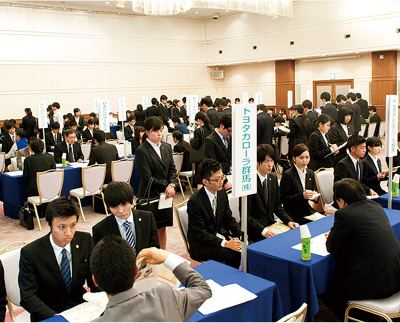
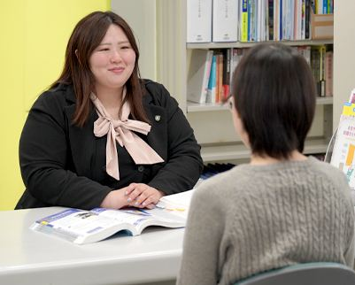
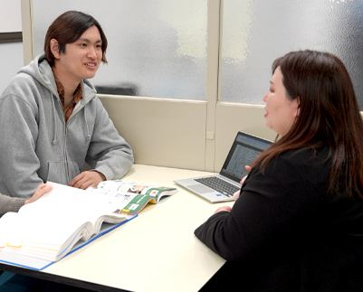

トップ ／ 就職・資格
なりたい仕事から、逆算する。
就職とは、社会人になるための最初の扉を自分で開けること。1年次の10月から、担任と就職指導センターが組んで、履歴書の書き方から面接、企業選びまで一人ひとりを支えます。

なりたい仕事を選んでみよう
仕事を選ぶと、その仕事を目指せる学科と、先輩の主な就職先が分かります。
就職活動の流れ
スケジュールに合わせて、段階ごとにサポートします。
- 1年 10月
就職指導が始まる
就職指導専任の先生による講座がスタート。自己分析と、就職活動スタートアップ講座。
- 1年 11月
業界と求人を研究する
業界研究、求人票研究、作文・筆記試験対策、履歴書作成指導、就職メイク講座。
- 1年 1月
マナーと面接の練習
就職活動スタートアップ講座、ビジネスマナー講習、面接対策。
- 2年 5〜8月
企業ガイダンスと個別指導
学園独自の就職説明会（企業ガイダンス）を2年次に計4回。担任と就職指導センターが個別に指導します。
- 内定から
新社会人の準備
内定後も、仕事の基本やビジネスマナーを指導し、社会人として万全のスタートが切れるようにします。


就職指導センター
就職指導から相談、カウンセリングまできめ細かく行い、企業情報や求人情報を公開する場として常設しています。専任のスタッフがいるので、いつでも自由に利用できます。
本校は厚生労働省認定の無料職業紹介所でもあり、求人の確保から企業ガイダンスの開催まで、生きた情報と活動の機会を提供しています。
要確認
就職率
今のサイトに数字がないため、公表している数字に差し替えます。
4回
学園独自の企業ガイダンス
2年次に開く、学園主催の合同企業説明会です。
1年次の10月
就職指導が始まる時期
早めに始めて、自分で動ける力をつけます。
学科ごとの主な就職先
今のサイトの「就職実績」から。アグリ・フードテック学科とゲームクリエイター学科は2026年新設のため、これから実績ができます。
就職の話も、オープンキャンパスで。
当日は就職サポートの説明と、個別の相談も受け付けています。